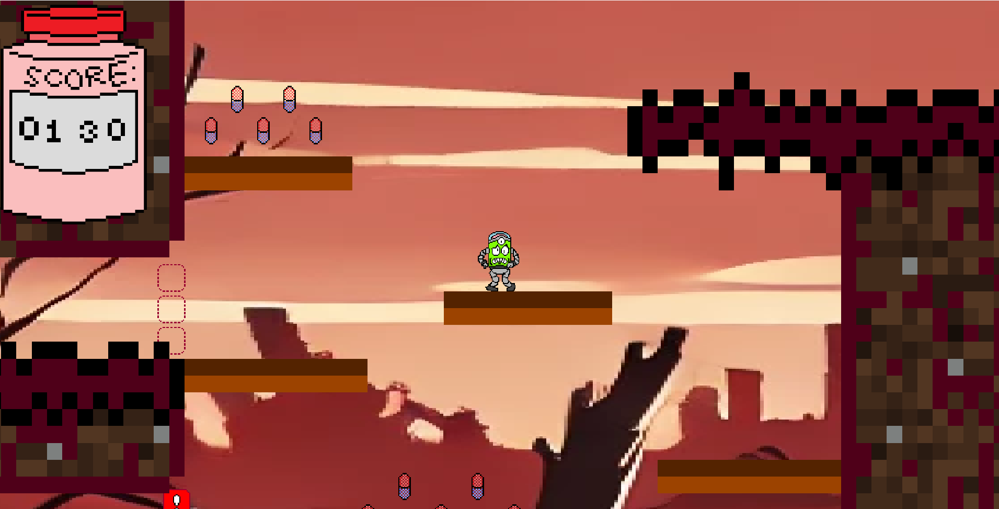
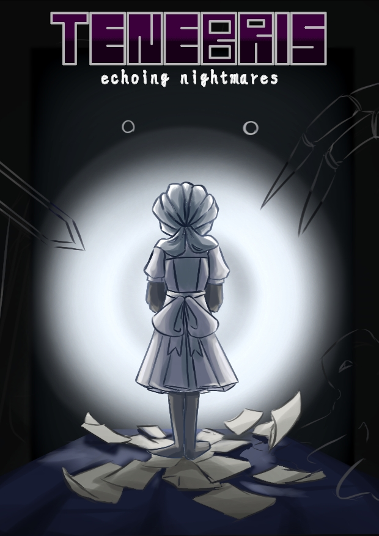
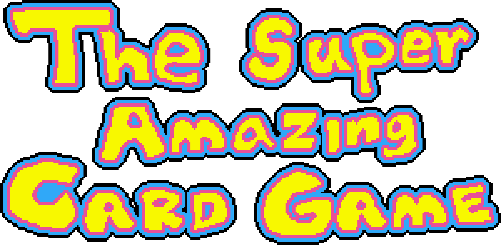
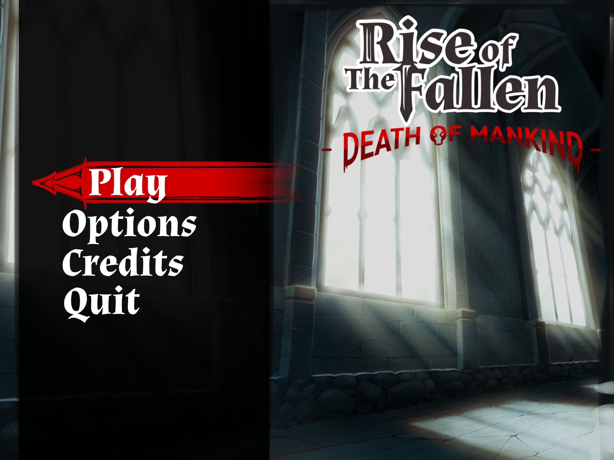

Xurbit's Conquest on yksinkertainen ja lyhyt Godot-pelimoottorilla luotu 2D-tasoloikkapeli, jossa pelaat Xurbit-nimisellä avaruusolennolla. Sinulla on tavoitteena on kerätä mahdollisimman paljon lääkepillereitä ennen kuin aktivoi tason lopussa olevan vivun. Vipua vetäessä ajastin käynnistyy, ja pelaajan kuuluu päästä takaisin lähtöpaikalle ennen kuin aika loppuu, ja pelin häviää. Pelin inspiraationa toimi Pizza Tower.

Tenebris - Echoing Nightmares on Unityllä luotu 3D-kauhupeli, jossa nuori tyttö joutuu painajaiseen, jossa hänen kuuluu paeta lähes loputtomasta asunnosta, samalla kun hänen manifestoidut huonot persoonallisuuden puolet, pimeän pelko, huono suuntavaisto ja paranoia jahtaavat häntä. Pelin inspiraationa toimi Amnesia: The Dark Descent ja Lethal Company.

The Super Amazing Card Game on yksinkertainen Pygame-moottorilla luotu korttipeli, jossa pelaat kasinossa pöydän ääressä, keräten pisteitä samalla kun vältät jokerikortteja. Pelin inspiraationa toimi New Super Mario Bros.-pelin sisäinen minipeli, Luigi's Casino.

Rise of the Fallen - Death Of Mankind on Unreal Engine 5:llä luotu toimintapeli, jossa pelataan demonihahmolla tappamassa ihmisiä. Tarinassa demoni oli saanut tarpeeksi hänen lajitovereidensa jatkuvasta teloittamisesta ihmisten toimesta. Pelin inspiraationa toimi Doom ja Ultrakill.

Fruit Fortess on minun virallisesti ensimmäinen omatoimisesti aloitettu pelini. Se on vauhdikas 2D-tasoloikkapeli, hyvin samanlainen kuin Xurbit's Conquest. Mutta se eroaa siitä siten, että olen käyttänyt enemmän vaivaa tähän. Siinä on omat musiikit, taustat, ja animaatiot, jotka ovat täysin itse tehtyjä. Se on vielä kehitysvaiheessa, eikä edes ensimmäinen taso ole vielä täysin valmis. Mutta olen asettanut itselleni tavoitteeksi jatkaa sitä heti, kun pystyn.
CODE Z - Hunters on Augmented Reality-peli, jossa pelaaja taistelisi mutantteja vastaan AR-todellisuudessa, mutta rajatun ajan takia, en saanut sitä työstettyä tarpeeksi kauan.